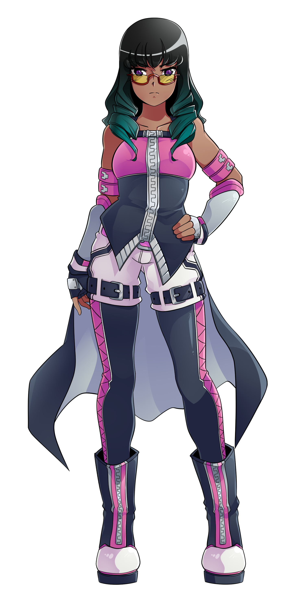
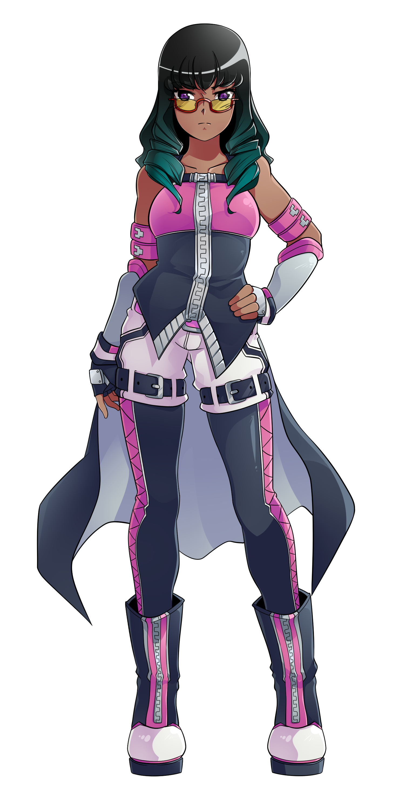

Tiala Hartlight
name: Tiala Hartlight
age: 17
gender: female
date of birth: 3/20
hair color: charcoal with teal ends
hair style: Shoulder length flowing slightly curled into small ringlets
skin tone: medium brown
eye color: purple (glasses)
height: 5 feet 6 inches
ethnicity/race: Black
citizenship: Sege Amant
key attribute: intense
Ambidextrous
body type: muscular
Character Bio/Personality:
While Tiala is still serious, she's mellowed significantly over her younger self.
Her perspective has similarly become more bitter sweet; she knows she can't do everything
herself and sacrifices will be made, but she's no longer so devoted to her cause that she's willing to forfeit them for victory.